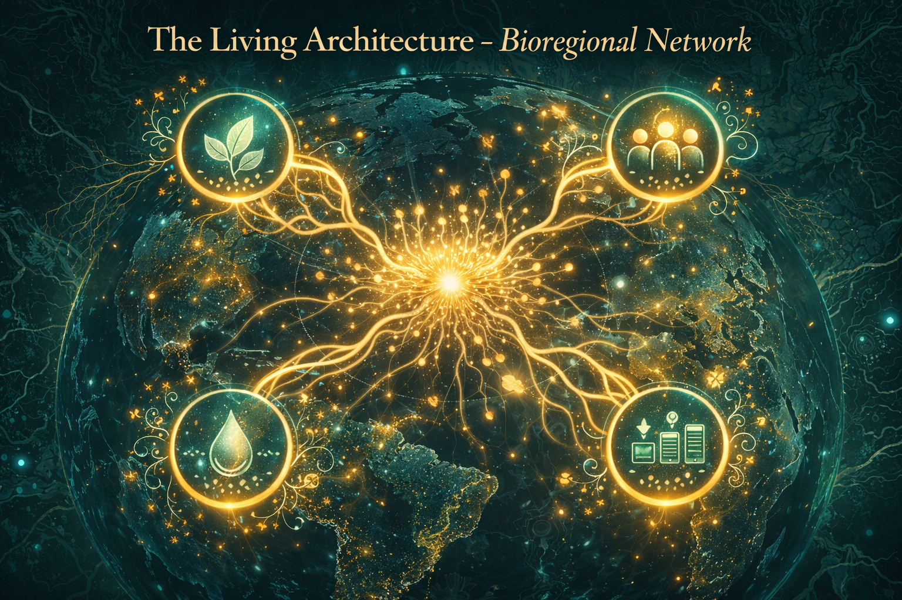

How We Operate
A Federated Living System Connecting Bioregions

The Living Architecture
The Planetary Party operates as a decentralized mycelial network, with each bioregion functioning as a sovereign node connected through shared protocols and mutual support.
- Bioregional Dashboards: Real-time intelligence systems
- Flow Funds: Trust-based capital flowing to grassroots leaders
- Guilds & Partners: The coordination field connecting efforts
- The Party: Festivals, assemblies, and action labs bringing it all to life